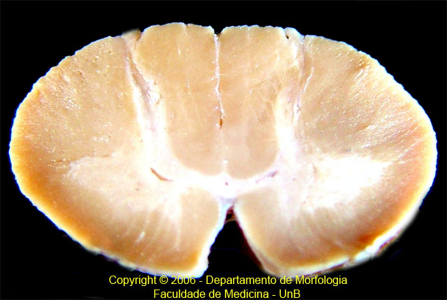

1. Fissura mediana anterior - 2. Funículo Anterior - 3. Corno anterior - 4. Corno anterior porção lateral - 5. Corno posterior - 6. Funículo lateral - 7. Canal central da medula - 8. Fascículo grácil - 9. Fascículo cuneiforme - 10. Sulco lateral posterior - 11. Sulco mediano posterior
Índice
Copyright © 2006 Departamento de Morfologia - Faculdade de Medicina - UnB - Todos os direitos reservados.
Webmaster: Ivan Ferreira - Med80